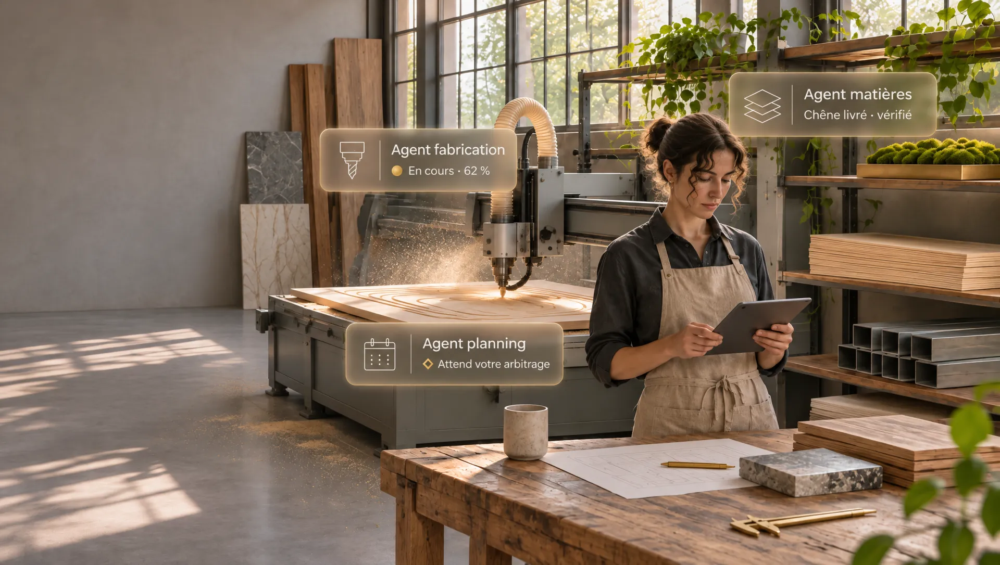

Deux directions, en images réelles
Chaque page est une suite de plans que le défilement fait avancer. Les textes restent en HTML ; les images et les mouvements de caméra sont générés, la maquette est modélisée dans Blender.

Direction 2
Atelier augmenté
Un vrai atelier : fraiseuse, établi, matières, une maison livrée. Chaque personne travaille avec son agent ; la boucle circuler, calculer, déclarer, arbitrer, commander relie tout.

Direction 3
Maquette de territoire
L’organisation en maquette de concours. On survole le plateau, on descend vers les trois paliers en acrylique, on arrive au pavillon en pisé.